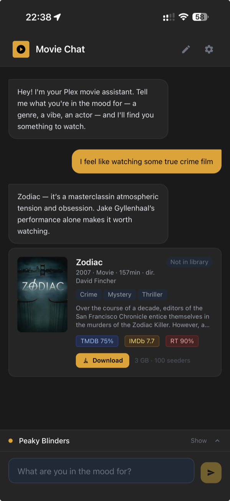
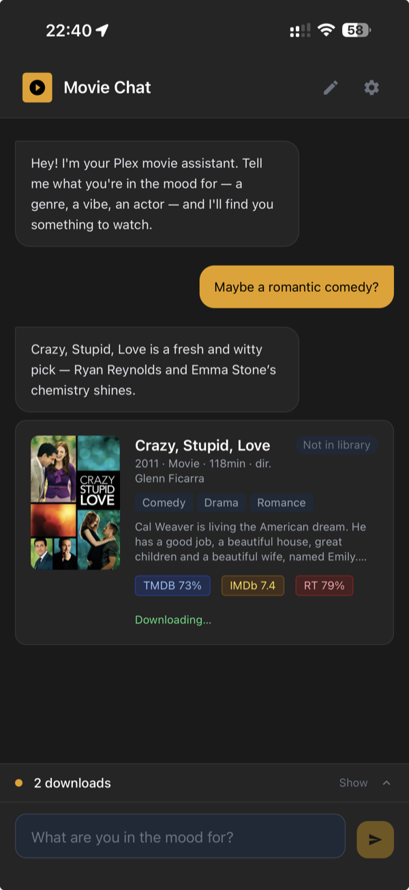
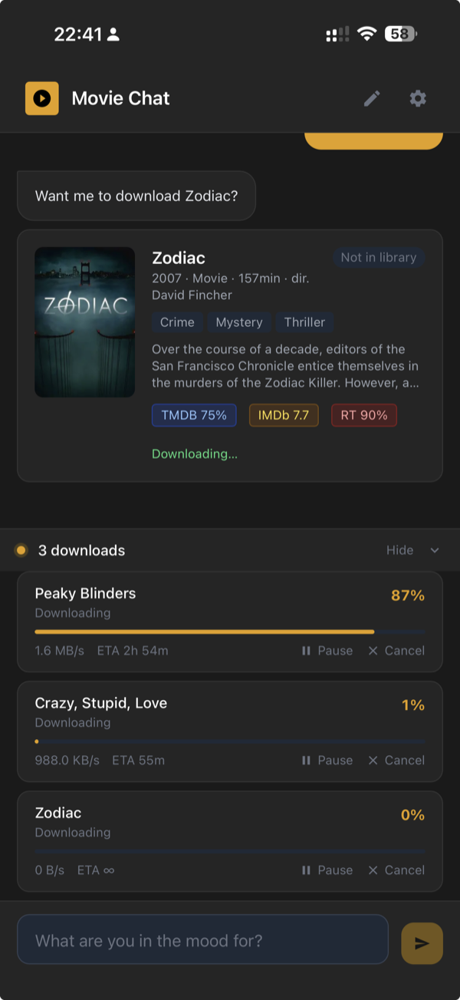
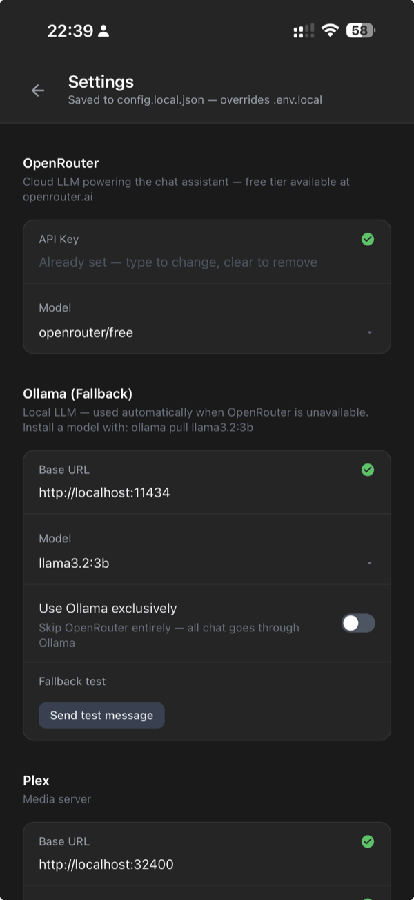

A self-hosted AI companion for your Plex library.
Tell it what you want to watch — it handles the rest.
/bin/bash -c "$(curl -fsSL https://raw.githubusercontent.com/nookied/movie-chat/main/install.sh)"



